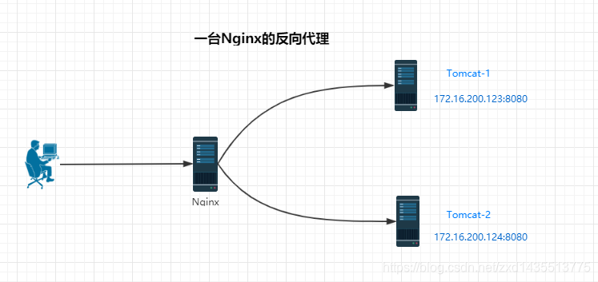
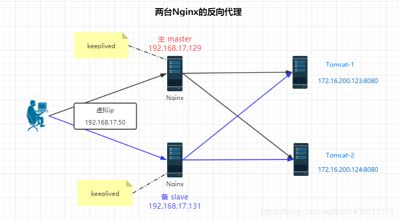
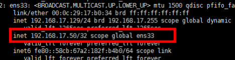
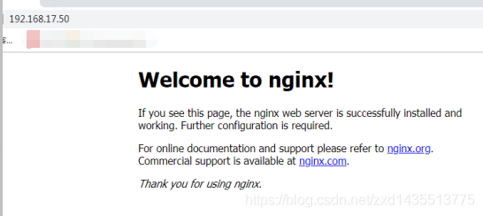
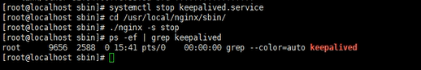
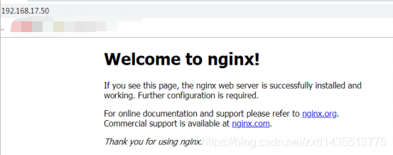

引言
假设只有一台Nginx做反向代理服务器，则结构图如下。

这种架构图，万一Nginx代理服务器挂掉了怎么办？后面的服务就都没有办法访问了，这是一个严重的问题。那怎么解决这个文件呢？
这就是下面要说的Nginx的高可用集群，也可以叫双机热备。
Nginx 高可用集群
下面使用两台Nginx做反向代理服务器，当其中一台Nginx宕机之后，仍能用另一台来工作，两台Nginx之间用keeplived来监测心跳。

如何配置
需要的环境
两台 Linux 并各自安装 Nginx 和 keepalived配置高可用的准备工作
（1）需要两台服务器 192.168.17.129 、192.168.17.131
（2）在两台服务器安装 Nginx
（3）在两台服务器安装 keepalived两台服务器都安装 keepalived
3.1 使用 yum 命令进行安装1yum install keepalived –y3.2 keepalived 安装之后，其配置文件目录如下：
1/etc/keepalived/keepalivec.conf完成高可用配置（主从配置）
4.1 修改/etc/keepalived/keepalivec.conf 配置文件123456789101112131415161718192021222324252627282930313233global_defs {notification_email {acassen@firewall.locfailover@firewall.locsysadmin@firewall.loc}notification_email_from Alexandre.Cassen@firewall.locsmtp_server 192.168.17.129smtp_connect_timeout 30# 通过它，可以访问到主机，在hosts文件中，要做映射关系，类似于 127.0.0.1 LVS_DEVELrouter_id LVS_DEVEL}vrrp_script chk_http_port {script "/usr/local/src/nginx_check.sh" # 执行脚本所在的位置interval 2 #检测脚本执行的间隔，单位秒，每个2秒执行一次脚本weight 2}vrrp_instance VI_1 {state MASTER # 备份服务器上将 MASTER 改为 BACKUPinterface ens33 # 绑定的网卡virtual_router_id 51 # 主、备机的 virtual_router_id 必须相同priority 90 # 主、备机取不同的优先级，主机值较大，备份机值较小advert_int 1 #每隔一秒发送一次心跳，确保从服务器是否还活着authentication { # 心跳检测需要的密码auth_type PASSauth_pass 1111}virtual_ipaddress {192.168.17.50 # VRRP H 虚拟地址}}4.2 在/usr/local/src 添加检测脚本，检查Nginx是否还活着
123456789#!/bin/bashA=`ps -C nginx –no-header |wc -l`if [ $A -eq 0 ];then/usr/local/nginx/sbin/nginx #Nginx启动命令的位置sleep 2if [ `ps -C nginx --no-header |wc -l` -eq 0 ];thenkillall keepalivedfifi4.3 把两台服务器上 nginx 和 keepalived 启动
12启动 nginx： ./nginx启动 keepalived： systemctl start keepalived.service可以使用ipconfig，查看虚拟Ip的绑定
最终测试
5.1 在浏览器地址栏输入 虚拟 ip 地址 192.168.17.50
5.2 把主服务器上的（192.168.17.129）Nginx 和 keepalived 停止，再输入 192.168.17.50，依旧可以访问Nginx。

